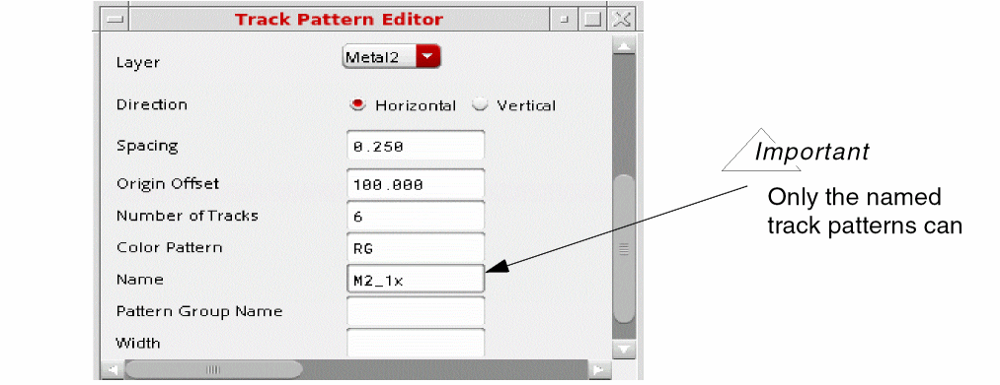
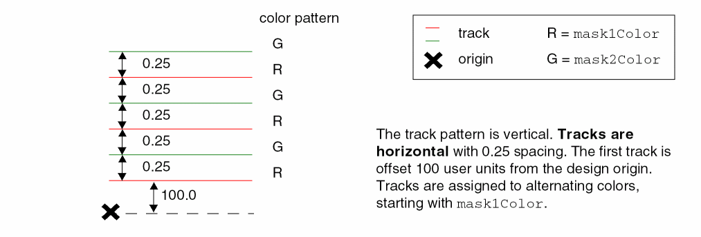
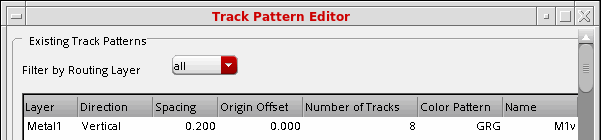
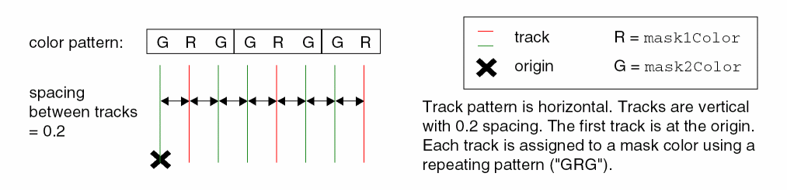
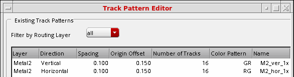
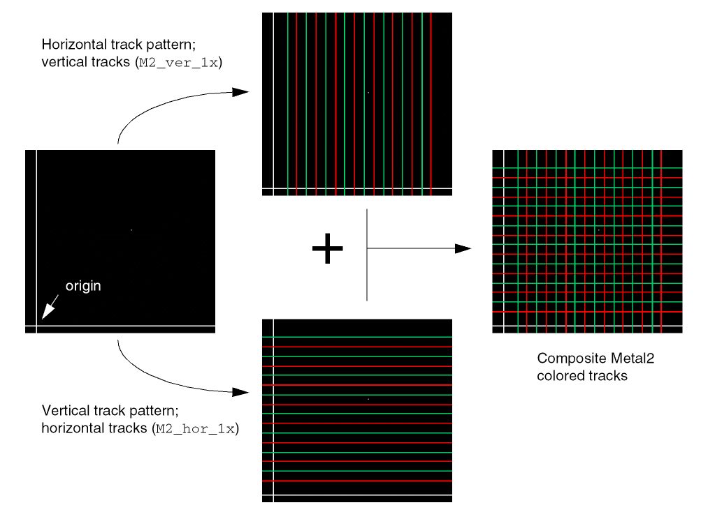

Track-Based Coloring
To use track-based coloring, you must create track patterns that assign mask colors in the layout. Shapes will be colored based on their position relative to the tracks. The Virtuoso wire editor can snap wires to tracks.
There are two methods for creating colored tracks in the layout:
-
Track Patterns
Track patterns specify the routing layer, direction, and offset. The spacing between tracks is fixed. The color pattern can be customized. -
Width Spacing Patterns (WSP)
WSPs create a correct by construction non-uniform routing grid with predefined width and color constraints. This methodology supports the creation of a global grid and one or more regions, where the grid for each region can be different from the global grid for increased flexibility and productivity with complex designs. For information on creating grids using WSPs, see Using Width Spacing Patterns.
To route wires on tracks with more than one mask per layer:
-
Create colored track patterns using one of these methods:
-
Creating colored tracks using track patterns
For each track pattern, you must specify the routing layer, track pattern direction, starting position with respect to the origin, spacing between tracks, and the total number of tracks. You can optionally assign a name to the track pattern, and customize the color pattern.
Color patterns can be specified using one of the following:-
A mask color (
Rfor mask1Color andGfor mask2Color; uppercase and lowercase characters are accepted) -
An alternating color pattern (for example,
"RG"or"GR") -
A sequence of mask colors (for example,
"RGR") - Repeating patterns given in compact notation "(pattern)^count"
-
where pattern is a sequence of mask colors and count is an integer representing the number of times the sequence is repeated. For example,
"(RG)^3(R)^8"is equivalent to"RGRGRGRRRRRRRR".
To control the display of track patterns in the layout view, refer to Displaying Track Patterns in Layout.
To create colored track patterns: -
A mask color (
Refer to Track Pattern Editor Form for information on using this form.
The following examples illustrate how track patterns are created:
Example: Defining a Track Pattern with Alternating Colors
This example creates horizontal tracks on theMetal2layer, spaced 0.25 user units apart, with the first track offset 100 user units from the origin, as shown in the figure below. The first track ismask1Color, the second ismask2Color, and so on, alternating colors ("RG") until 6 tracks have been created.Example: Illustration of a Track Pattern with Alternating Colors
Example: Defining a Track Pattern with a Color Pattern
This example creates vertical tracks on theMetal1layer, spaced 0.2 user units apart, with the first track at the origin. The tracks are assigned to color masks in this sequence:mask2Color,mask1Color,mask2Color. The color track pattern is repeated until 8 tracks have been created, as shown in the figure below.
Example: Illustration of a Track Pattern with a Color Pattern
Example: Defining Multiple Track Patterns for a Single Layer
This example creates horizontal and vertical tracks on theMetal2layer, spaced 0.1 user units apart with the first track offset 0.15 user units from the origin in both directions. The tracks are assigned to alternating color masks, starting withmask1Colorfor the horizontal tracks, andmask2Colorfor the vertical tracks. Sixteen (16) tracks are created in each direction, as shown in the figure below.
Example: Illustration of Multiple Track Patterns for a Single Layer
 -
Creating colored tracks using track patterns
To set up colored tracks using width spacing patterns (WSPs), set the pattern-related constructs, purposes, and display packets in the technology file, and set the display resource file. Use the Track Pattern Assistant to choose the WSPs for the global area and regions in the canvas.
- Turn on the multiple patterning color engine, as described in Turning the Multiple Patterning Color Engine On and Off.
-
Create wires snapped to tracks, as described in Creating Wires Snapped to Track Patterns.
The guidelines for coloring shapes are described in Displaying Track Patterns in Layout.
Return to top